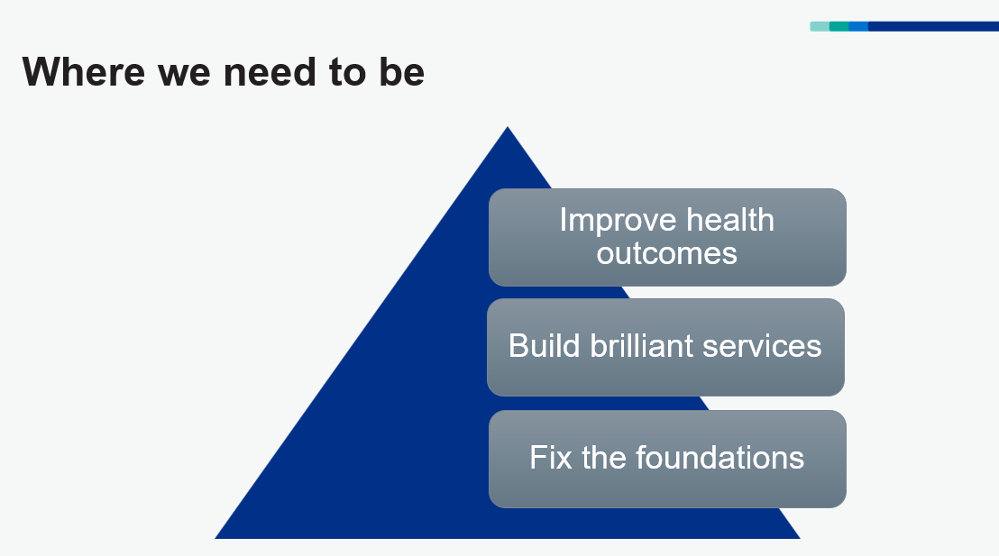

Monthnote April - Fix the Foundations
Events this month
Overall, April was a great month. I’ve made lots of significant progress. My health is improving again, after a very few difficult months, I’ve been on a few hikes and some short runs.
At work I’ve explored innovative technologies, strengthened collaborations, and identified some big improvements for our Ops processes and ways of working.
While the organisational restructure continues, it seems there are few safe spaces for discussions, and very little clarity about when new information will be available. Staff still would like to feed into the process, but there isn’t any process to feed into. In my opinion, focusing on fixing foundational issues, empowering digital teams, and improving health outcomes should be the priority.
AI participants instead of fieldwork? 22/4
We had an interesting session with a company that provides AI/synthetic research participants. The discussion focused on understanding if and where this technology could align with our User-Centred Design (UCD) strategy. I must admit, as interesting as the product sounded, operationally, we have many basic problems that need solving first.
Microsoft and NHS Connect Team: 22/4
We engaged in a productive session with the Microsoft Partner and NHS Connect team, discussing the potential of MS Copilot and Research Agents. The conversation centred on how Copilot technology could support our UR Finder workstream and help integrate local research repositories. A pilot project is set to follow.
Central UCD Team Away Day: 23/4
The away day featured excellent workshop sessions with the team, where we identified several ways to improve our working methods. The main focus was on how to better communicate the value of our team’s projects to wider stakeholders, emphasising our role in enabling inclusion, delivery, quality standards, innovation, and more.
UR Leadership Away Day: 24/4
It was great to reconnect with colleagues in person after a long time. We discussed significant organisational and programme changes since our last meeting, addressing some major challenges that lie ahead. It was reassuring to see our concerns being acknowledged and escalated. We also identified actions for the UCD team to support colleagues and enable professional development through UCD operations development opportunities.
URCON 2025: 29/4
Attended the URCON 2025 conference, which provided valuable insights and networking opportunities. First conference I’ve been to since pre-covid. It was all quite overwhelming I must admit.
The Re-Org
Open Question: how do we feed into the future designs? who is championing our digital teams? what are their needs in the future org?
We were asked to provide feedback several months ago, about where we saw areas for improvement across NHSE. So far no response to that consultation has been shared, and no future plan for NHSE/DHSC is available.
UCD (and most) staff are concerned that the value of digital isn’t being understood by decision makers.
There is a real risk now that 10 years of DDAT capability building in the NHS is lost. The loss of critical staff and teams for running (and improving) critical national services.
It would be best for a large-scale ongoing consultation with a wide range of delivery teams, however it seems this is not happening.
So here are my thoughts, it is my opinion only.
What are the challenges to address?
As a basis for improvement in the future org design, we should consider what didn’t Work over last few years…
Working from the central team, some of the common challenges I’ve seen teams struggling with include:
- Too many org changes & top-down mandates
- Unclear priorities and lack of budgets
- Delivery hindered by lack of supporting roles
- Over-reliance on commercial partners
- Unmotivated staff, high sickness, and absence rates
- Duplicated efforts and disorganised teams
- Burdensome processes and governance
- Leadership lacking vision, transparency, and accountability
How Might We ensure the ‘New Org’ can deliver on digital?

1. Fix the Foundations
Without firm foundations, teams operate very inefficiently. We need to establish a culture of improvement and build firm foundations. The IMPACT initiative could support this, but again it feels very top-down and teams are not really engaged.
To support improvemnt and horizontal change, it might mean that for a short while teams must free up staff time, which impacts deliver. Difficult decisions about priority need to be made, but in the longer run it would enable all teams us to build brilliant services.
Get the basics right, as a priority
People:
- Shift towards permanent staffing
- Regular staff feedback, reviewed and actioned
- Focus on staff wellness and motivation
- Increased administrative and operational support
Professions:
- Establish Centres of Expertise (User-Centred Design, Product Management, Engineering), providing: training, coaching, expertise, guidance, policy and documentation
- Strengthen data foundations (Analytics, BI, MI, Customer Experience) - like UCD professions, ensure every team has access to data specialists
- Provide the right tools for the task, each profesison has a standard/ minimum toolset
Processes:
- Delivery and PMO support – more coordination, cohesion and rationalisation
- Streamline internal services, governance and approvals (HR, IT, etc.)
- A new team to support onboarding and offboarding of staff
2. Empowered Digital Teams
Establish empowered digital delivery teams Who can work following industry best practices, standards.
Ensure teams meet our own stnadards! Focus on enabling UCD culture and end-to-end service design.
Reforming the TRG/TSAS/TADA/DHSC and other assurances processes to be simpler, Agile, fit for purpose.
Build brilliant services
- Inclusive and equitable user-centred design strategy for all services
- High-quality discovery/generative research to deeply understand users’ needs
- End-to-end, front-to-back service design and co-design
- Utilise the Service Manual, Design System, and Engineering Standards
- Hire specialists for specialist work
- Retain the best talent through training, development, and rewards
- More ‘agile’ budgets for teams, budgets agreed on time
- Empowered teams with decision-making at appropriate levels
- Continuous assurance for teams to learn, iterate, and improve
3. Improve Health Outcomes
Teams goals’ should be linked to improving health outcomes, delivered with clinical benefits, clinical safety front of mind.
The services we build should have regular feedback loops, to understand if they are usable, utlised, providing value for customers and operating efficiently.
When we do build brilliant services, we will have many more patient and NHS success stories to shout about.
Success strategy for products and services
- Ensure products and services are clinically safe
- Quantify impact and improvement to health outcomes
- Ensure services are usable, utilised, and receive good customer feedback
- Promote transparent leadership with improved stakeholder engagement and communications
- Align strategy and policy objectives with delivery teams’ input
- Maintain accessible and up-to-date product roadmaps and backlogs
- Stakeholders should be required to engage in the UCD and co-design process, not simply providing top-down mandates for teams
- Use performance metrics and benefits analysis to support service accountability
- Share best practices, case studies, and components widely across NHS/Gov
.r